일반기계기사 (2018-03-04 기출문제)
1과목: 재료역학
1. 최대 사용강도(σmax)=240Mpa, 내경 1.5m, 두께 3mm의 강재 원통형 용기가 견딜 수 있는 최대 압력은 몇 kPa인가? (단, 안전계수는 2이다.)
- 240
- 480
- 960
- 1920
(정답률: 49%)

2. 그림과 같은 직사각형 단면의 목재 외팔보에 집중하중 P가 C점에 작용하고 있다. 목재의 허용압축응력을 8MPa, 끝단 B점에서의 허용 처짐량을 8MPa, 끝단 B점에서의 허용처짐량을 23.9mm라고 할 때 허용압축응력과 허용 처짐량을 모두 고려하여 이 목재에 가할 수 있는 집중하중 P의 최대값은 약 몇 kN인가? (단, 목재의 탄성계수는 12GPa, 단면2차모멘트 1022×10-6m4, 단면계수는 4.601×10-3m3이다.)
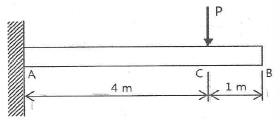
- 7.8
- 8.5
- 9.2
- 10.0
(정답률: 42%)
3. 길이가 ℓ+2a인 균일 단면 봉의 양단에 인장력 P가 작용하고, 양 단에서의 거리가 a인 단면에 Q의 축 하중이 가하여 인장될 때 봉에 일어나는 변형량은 약 몇 cm인가? (단, ℓ=60cm, a=30cm, P=10kN, Q=5kN, 단면적 A=4cm2, 탄성계수는 210GPa 이다.)(오류 신고가 접수된 문제입니다. 반드시 정답과 해설을 확인하시기 바랍니다.)
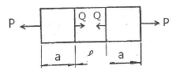
- 0.0107
- 0.0207
- 0.0307
- 0.0407
(정답률: 52%)
4. 양단이 힌지로 지지되어 있고 길이가 1m인 기둥이 있다. 단면이 30mm x 30mm인 정사각형이라면 임계하중은 약 몇 kN인가? (단, 탄성계수는 210Gpa이고, Euler의 공식을 적용한다.)
- 133
- 137
- 140
- 146
(정답률: 62%)
5. 직사각형 단면(폭×높이=12cm×5cm)이고, 길이 1m인 외팔보가 있다. 이 보의 허용굽힘응력이 500 Mpa이라면 높이와 폭의 치수를 서로 바꾸면 받을 수 있는 하중의 크기는 어떻게 변화하는가?
- 1.2배 증가
- 2.4배 증가
- 1.2배 감소
- 변화없다.
(정답률: 63%)
6. 아래 그림과 같은 보에 대한 굽힘 모멘트 선도로 옳은 것은?
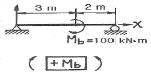
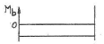
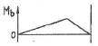
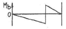
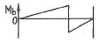
(정답률: 46%)
7. 코일스프링의 권수를 n, 코일의 지름 D, 소선의 지름 d인 코일스프링의 전체처짐 δ는? (단, 이 코일에 작용하는 힘은 P, 가로탄성게수는 G이다.)
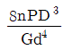
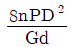
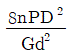
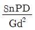
(정답률: 63%)
8. 그림과 같은 정삼각형 트러스의 B점에 수직으로, C점에 수평으로 하중이 작용하고 있을때, 부재 AB에 작용하는 하중은?
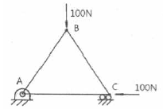
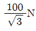
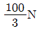
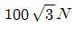
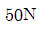
(정답률: 50%)
9. σx = 700 Mpa, σy = -300 Mpa 가 작용하는 평면응력 상태에서 최대 수직응력(σmax)과 최대 전단응력(τmax)은 각각 몇 MPa인가?
- σmax = 700, τmax = 300
- σmax = 600, τmax = 400
- σmax = 500, τmax = 700
- σmax = 700, τmax = 500
(정답률: 64%)
10. 그림과 같이 초기온도 20℃, 초기길이 19.95cm, 지름 5cm인 봉을 간격이 20cm 인 두 벽면 사이에 넣고 봉의 온도를 220℃로 가열했을 때 봉에 발생되는 응력은 몇 Mpa인가? (단, 탄성계수 E=210Gpa이고, 균일 단면을 갖는 봉의 선팽창계수 a=1.2×10-5/℃ 이다.)
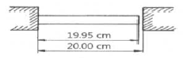
- 0
- 25.2
- 257
- 504
(정답률: 56%)
11. 그림과 같이 T형 단면을 갖는 돌출보의 끝에 집중하중 P=4.5 kN이 작용한다. 단면 A-A에서의 최대 전단응력은 약 몇 kPa인가? (단, 보의 단면2차 모멘트는 5313cm4이고, 밑면에서 도심까지의 거리는 125mm이다.)
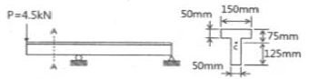
- 421
- 521
- 662
- 721
(정답률: 23%)
12. 다음 금속재료의 거동에 대한 일반적인 설명으로 틀린 것은?
- 재료에 가해지는 응력이 일정하더라도 오랜 시간이 경과하면 변형률이 증가할 수 있다.
- 재료의 거동이 탄성한도로 국한된다고 하더라도 반복하중이 작용하면 재료의 강도가 저하 될 수 있다.
- 응력-변형률 곡선에서 하중을 가할 때와 제거할 때의 경로가 다르게 되는 현상을 히스테리시스라 한다.
- 일반적으로 크리프는 고온보다 저온상태에서 더 잘 발생한다.
(정답률: 61%)
13. 다음 그림과 같이 집중하중 P를 받고 있는 고정 지지보가 있다. B점에서의 반력의 크기를 구하면 몇 kN인가?
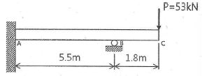
- 54.2
- 62.4
- 70.3
- 79.0
(정답률: 14%)
14. 지름 80 mm의 원형단면의 중립축에 대한 관성모멘트는 약 몇 mm4인가?
- 0.5×106
- 1×106
- 2×106
- 4×106
(정답률: 60%)
15. 길이가 이며, 관성 모멘트가 Ip이고, 전단탄성계수 G인 부재에 토크 T가 작용될때 이 부재에 저장된 변형 에너지는?
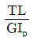
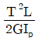
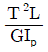
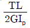
(정답률: 64%)
16. 지름 50mm의 알루미늄 봉에 100kN의 인장 하중이 작용할 대 300mm의 표점거리에서 0.219mm의 신장이 측정되고, 지름은 0.01215mm만큼 감소되었다. 이 재료의 전단탄성계수 G는 약 몇 GPa인가? (단, 알루미늄 재료는 탄성거동 범위 내에 있다.)
- 21.2
- 26.2
- 31.2
- 36.2
(정답률: 48%)
17. 비틀림 모멘트 T를 받고 있는 직경이 d인 원형축의 최대전단응력은?
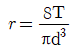
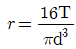
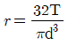
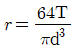
(정답률: 62%)
18. 그림과 같은 외팔보가 있다. 보의 굽힘에 대한 허용응력을 80 Mpa로 하고, 자유단 B로부터 보의 중앙점 C사이에 등분포하중 ω를 작용시킬 때, ω의 허용 최대값은 몇 kN/m인가? (단, 외팔보의 폭 x, 높이는 5cm×9cm이다.)
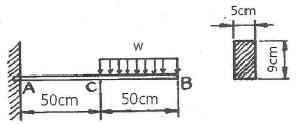
- 12.4
- 13.4
- 14.4
- 15.4
(정답률: 53%)
19. 다음 정사각형 단면(40mm×40mm)을 가진 외팔보가 있다. a - a면 에서의 수직응력(σn)과 전단응력(τs)은 각각 몇 kPa인가?
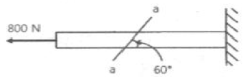
- σn = 693, τs = 400
- σn = 400, τs = 693
- σn = 375, τs = 217
- σn = 217, τs = 375
(정답률: 36%)
20. 다음 보의 자유단 A지점에서 발생하는 처짐은 얼마인가? (단, EI는 굽힘강성이다.)
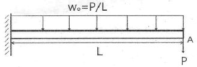
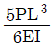
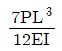
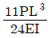
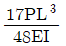
(정답률: 58%)
2과목: 기계열역학
21. 이상적인 오토 사이클에서 단열압축되기 전 공기가 101.3 kPa, 21℃이며, 압축비 7로 운전할 때 이 사이클의 효율은 약 몇 %인가? (단, 공기의 비열비는 1.4이다.)
- 62%
- 54%
- 46%
- 42%
(정답률: 60%)
22. 다음 중 강성적(강도성, intensive) 상태량이 아닌 것은?
- 압력
- 온도
- 엔탈피
- 비체적
(정답률: 63%)
23. 이상기체 공기가 안지름 0.1m인 관을 통하여 0.2m/s로 흐르고 있다. 공기의 온도는 20 C, 압력은 100kPa, 기체상수는 0.287kJ/(kg K)라면 질량유량은 약 몇 kg/s인가?
- 0.0019
- 0.0099
- 0.0119
- 0.0199
(정답률: 56%)
24. 이상기체가 정압과정으로 dT만큼 온도가 변하였을 때 1kg당 변화된 열량 Q는? (단, Cv는 정적비열, Cp는 정압비열, k는 비열비를 나타낸다.)
- Q=CvdT
- Q=k2CvdT
- Q=CpdT
- Q=kCpdT
(정답률: 63%)
25. 열역학적 변화와 관련하여 다음 설명 중 옳지 않은 것은?
- 단위 질량당 물질의 온도를 1℃ 올리는데 필요한 열량을 비열이라 한다.
- 정압과정으로 시스템에 전달된 열량은 엔트로피 변화량과 같다.
- 내부 에너지는 시스템의 질량에 비례하므로 종량적(extensive) 상태량이다.
- 어떤 고체가 액체로 변화할 때 융해(Melting)라고 하고, 어떤고체가 기체로 바로 변화할때 승화(Sublimation)라고 한다.
(정답률: 56%)
26. 저온실로부터 46.4kW의 열을 흡수할 때 10kW의 동력을 필요로 하는 냉동기가 있다면, 이 냉동기의 성능계수는?
- 4.64
- 5.65
- 7.49
- 8.82
(정답률: 66%)
27. 엔트로피(s) 변화 등과 같은 직접 측정할 수 없는 양들을 압력(P), 비체적(v), 온도(T)와 같은 측정 가능한 상태량으로 나타내는 Maxwell 관계식과 관련하여 다음 중 틀린 것은?(오류 신고가 접수된 문제입니다. 반드시 정답과 해설을 확인하시기 바랍니다.)
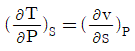
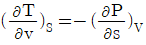
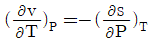
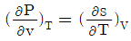
(정답률: 29%)
28. 다음 4가지 경우에서 ( ) 안의 물질이 보유한 엔트로피가 증가한 경우는?
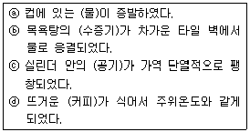
- ⓐ
- ⓑ
- ⓒ
- ⓓ
(정답률: 55%)
29. 공기압축기에서 입구 공기의 온도와 압력은 각각 27℃, 100kPa이고, 체적유량은 0.01m3/s이다. 출구에서 압력이 400kPa이고, 이 압축기의 등엔트로피 효율이 0.8일 때, 압축기의 소요 동력은 약 몇 kW인가? (단, 공기의 정압비열과 기체상수는 각각 1kJ/(kg·K), 0.287kJ/(kg·K)이고, 비열비는 1.4이다.)
- 0.9
- 1.7
- 2.1
- 3.8
(정답률: 22%)
30. 초기 압력 100kPa, 초기 체적 0.1m3인 기체를 버너로 가열하여 기체 체적이 정압과정으로 0.5m3이 되었다면 이 과정 동안 시스템이 외부에 한 일은 몇 kJ인가?
- 10
- 20
- 30
- 40
(정답률: 66%)
31. 증기터빈 발전소에서 터빈 입구의 증기 엔탈피는 출구의 엔탈피보다 136kJ/kg 높고, 터빈에서의 열손실은 10kJ/kg이다. 증기속도는 터빈 입구에서 10m/s이고, 출구에서 110m/s일 때 이 터빈에서 발생시킬 수 있는 일은 약 몇 kJ/kg인가?
- 10
- 90
- 120
- 140
(정답률: 44%)
32. 그림과 같이 온도(T)-엔트로피(S)로 표시된 이상적인 랭킨사이클에서 각 상태의 엔탈피(h)가 다음과 같다면, 이 사이클의 효율은 약 몇 %인가? (단, h1= 30 kJ/kg, h2 = 31 kJ/kg, h3 = 274 kJ/kg, h4 = 668 kJ/kg, h5 = 764 kJ/kg, h6 = 478 kJ/kg이다.)
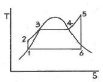
- 39
- 42
- 53
- 58
(정답률: 56%)
33. 이상적인 복합 사이클(사바테 사이클)에서 압축비는 16, 최고압력비(압력상승비)는 2.3, 체절비는 1.6이고, 공기의 비열비는 1.4일 때 이 사이클의 효율은 약 몇 %인가?
- 55.52
- 58.41
- 61.54
- 64.88
(정답률: 19%)
34. 단위질량의 이상기체가 정적과정 하에서 온도가 T1에서 T2로 변하였고, 압력도 P1에서 P2로 변하였다면, 엔트로피 변화량 ΔS는? (단, Cv와 Cp는 각각 정적비열과 정압비열이다.)
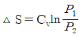
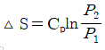
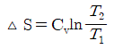
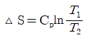
(정답률: 60%)
35. 온도가 각기 다른 액체 A(50℃), B(25℃), C(10℃)가 있다. A와 B를 동일질량으로 혼합하면 40℃로 되고, A와 C를 동일질량으로 혼합하면 30℃로 된다. B와 C를 동일질량으로 혼합할 때는 몇 ℃로 되겠는가?
- 16
- 18.4
- 20
- 22.5
(정답률: 45%)
36. 어떤 기체가 5kJ의 열을 받고 0.18kN·m의 일을 외부로 하였다. 이때의 내부에너지의 변화량은?
- 3.24 kJ
- 4.82 kJ
- 5.18 kJ
- 6.14 kJ
(정답률: 61%)
37. 대기압이 100kPa 일 때, 계기 압력이 5.23MPa 인 증기의 절대 압력은 약 몇 MPa인가?
- 3.02
- 4.12
- 5.33
- 6.43
(정답률: 65%)
38. 압력 2Mpa, 온도 300℃의 수증기가 20m/s 속도로 증기터빈으로 들어간다. 터빈 출구에서 수증기 압력이 100kPa, 속도는 증기터빈으로 들어간다. 터빈 출구에서 수증기 압력이 100kPa, 속도는 100m/s이다. 가역단열과정으로 가정 시, 터빈을 통과하는 수증기 1kg 당 출력일은 약 몇 kJ/kg인가? (단, 수증기표로부터 2MPa, 300℃에서 비엔탈피는 3023.5 kJ/kg, 비엔트로피는 6.7663kJ/(kg·K)이고, 출구에서의 비엔탈피 및 비엔트로피는 아래 표와 같다.)
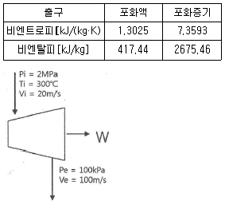
- 1534
- 564.3
- 153.4
- 764.5
(정답률: 34%)
39. 520K의 고온 열원으로 18.4kJ 열량을 받고 273K의 저온 열원에 13kJ의 열량 방출하는 열기관에 대하여 옳은 설명은?
- Calusius 적분값은 -0.0122kJ/K이고, 가역과정이다.
- Calusius 적분값은 -0.0122kJ/K이고, 비가역과정이다.
- Calusius 적분값은 +0.0122kJ/K이고, 가역과정이다.
- Calusius 적분값은 +0.0122kJ/K이고, 비가역과정이다.
(정답률: 46%)
40. 랭킨 사이클에서 25℃, 0.01MPa 압력의 물 1kg을 5MPa 압력의 보일러로 공급한다. 이때 펌프가 가역단열과정으로 작용한다고 가정할 경우 펌프가 한 일은 약 몇 kJ인가? (단, 물의 비체적은 0.001m3/kg이다.)
- 2.58
- 4.99
- 20.10
- 40.20
(정답률: 58%)
3과목: 기계유체역학
41. 지름 0.1mm, 비중 2.3인 작은 모래알이 호수바닥으로 가라앉을 때, 잔잔한 물 속에서 가라앉는 속도는 약 몇 mm/s인가? (단, 물의 점성계수는 1.12×10-3,N s/m2이다.)
- 6.32
- 4.96
- 3.17
- 2.24
(정답률: 20%)
42. 반지름 R인 파이프 내에 점도 μ인 유체가 완전발달 층류유동으로 흐르고 있다. 길이 L을 흐르는데 압력 손실이 Δp만큼 발생했을 때, 파이프 벽면에서의 평균전단응력은 얼마인가?
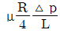
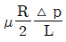
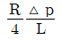
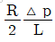
(정답률: 28%)
43. 어느 물리법칙이 F(a, V, v, L)=0과 같은 식으로 주어졌다. 이 식을 무차원수의 함수로 표시하고자 할 때 이에 관계되는 무차원수는 몇 개인가? (단, a, V, v, L은 각각 가속도, 속도, 동점성계수, 길이이다.)
- 4
- 3
- 2
- 1
(정답률: 50%)
44. 평균 반지름이 R인 얇은 막 형태의 작은 비누방울의 내부 압력을 Pi, 외부 압력을 Po라고 할 경우, 표면 장력(σ)에 의한 압력차 (Pi-Po)는?
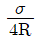
(정답률: 40%)
45. 1/20로 축소한 모형 수력 발전 댐과, 역학적으로 상사한 실제 수력 발전 댐이 생성할 수 있는 동력의 비(모형 : 실제)는 약 얼마인가?
- 1 : 1800
- 1 : 8000
- 1 : 35800
- 1 : 160000
(정답률: 26%)
46. 비압축성 유체의 2차원 유동 속도성분이 u=x2t, v=x2-2xyt이다. 시간(t)이 2일때, (x,y)=(2,-1)에서 x방향 가속도(ax)는 약 얼마인가? (단, u,v는 각각 x,y방향 속도성분이고, 단위는 모두 표준단위이다.)
- 32
- 34
- 64
- 68
(정답률: 16%)
47. 다음과 같이 유체의 정의를 설명할 때 괄호속에 가장 알맞은 용어는 무엇인가?
- 수직응력
- 중력
- 압력
- 전단응력
(정답률: 60%)
48. 안지름 100mm인 파이프 안에 2.3m3/min의 유량으로 물이 흐르고 있다. 관 길이가 15m라고 할 때 이 사이에서 나타나는 손실수두는 약 몇 m인가? (단, 관마찰계수는 0.01로 한다.)
- 0.92
- 1.82
- 2.13
- 1.22
(정답률: 59%)
49. 지름 20cm, 속도 1m/s인 물 제트가 그림과 같이 넓은 평판에 60° 경사하여 충돌한다. 분류가 평판에 작용하는 수직방향 힘 FN은 약 몇 N인가? (단, 중력에 대한 영향은 고려하지 않는다.)
- 27.2
- 31.4
- 2.72
- 3.14
(정답률: 48%)
50. 경계층(boundary layer)에 관한 설명 중 틀린 것은?
- 경계층 바깥의 흐름은 포텐셜 흐름에 가깝다.
- 균일 속도가 크고, 유체의 점섬이 클수록 경계층의 두께는 얇아진다.
- 경계층 내에서는 점성의 영향이 크다.
- 경계층은 평판 선단으로부터 하류로 갈수록 두꺼워진다.
(정답률: 54%)
51. 안지름이 20cm, 높이가 60cm인 수직 원통형 용기에 밀도 850kg/m3인 액체가 밑면으로부터 50cm 높이만큼 채워져 있다. 원통형 용기와 용기와 액체가 일정한 각속도로 회전할 때, 액체가 넘치기 시작하는 각속도는 약 몇 rpm인가?
- 134
- 189
- 276
- 392
(정답률: 27%)
52. 유체 계측과 관련하여 크게 유체의 국소속도를 측정하는 것과 체적유량을 측정하는 것으로 구분할 때 다음 중 유체의 국소속도를 측정하는 계측기는?
- 벤투리미터
- 얇은 판 오리피스
- 열선 속도계
- 로터미터
(정답률: 40%)
53. 유체(비중량 10N/m3)가 중량유량 6.28N/s로 지름 40cm인 관을 흐르고 있다. 이 관 내부의 평균 유속은 약 몇 m/s인가?
- 50.0
- 5.0
- 0.2
- 0.8
(정답률: 55%)
54. (x,y)좌표계의 비회전 2차원 유동장에서 속도 포텐션(potential)는 ø=2x2y로 주어졌다. 이때 점(3, 2)인 곳에서 속도 벡터는? (단, 속도포텐셜 ø는 ø≡∇ø=gradø로 정의된다.)
- 24
 +18
+18
- -24
 +18
+18
- 12
 +9
+9 - -12+9

(정답률: 52%)
55. 수평면과 60° 기울어진 벽에 지름이 4m인 원형창이 있다. 창의 중심으로부터 5m 높이에 물이 차있을 때 창에 작용하는 합력의 작용점과 원형창의 중심(도심)과의 거리(C)는 약 몇 m인가? (단, 원의 2차 면적 모멘트는 (πR4)/4이고, 여기서 R은 원의 반지름이다.)
- 0.0866
- 0.173
- 0.866
- 1.73
(정답률: 34%)
56. 연직하방으로 내려가는 물제트에서 높이 10m인 곳에서 속도는 20m/s였다. 높이 5m인 곳에서의 물의 속도는 약 몇 m/s 인가?
- 29.45
- 26.34
- 23.88
- 22.32
(정답률: 46%)
57. 그림에서 압력차(Px-Py)는 약 몇 kPa인가?
- 25.67
- 2.57
- 51.34
- 5.13
(정답률: 55%)
58. 공기로 채워진 0.189m3의 오일 드럼통을 사용하여 잠수부가 해저 바닥으로부터 오래된 배의 닻을 끌어올리려 한다. 바닷물 속에서 닻을 들어올리는데 필요한 힘은 1780N이고, 공기 중에서 드럼통을 들어 올리는데 필요한 힘은 222N이다. 공기로 채워진 드럼통을 닻에 연결한 후 잠수부가 이 닻을 끌어올리는 데 필요한 최소 힘은 약 몇 N 인가? (단, 바닷물의 비중은 1.025이다.)
- 72.8
- 83.4
- 92.5
- 103.5
(정답률: 28%)
59. 수력기울기선(Hydraulic Grade Line; HGL)이 관보다 아래에 있는 곳에서의 압력은?
- 완전 진공이다.
- 대기압보다 낮다.
- 대기압과 같다.
- 대기압보다 높다.
(정답률: 48%)
60. 원관 내부의 흐름이 층류 정상 유동일 때 유체의 전단응력 분포에 대한 설명으로 알맞은 것은?
- 중심축에서 0이고, 반지름 방향 거리에 따라 선형적으로 증가한다.
- 관 벽에서 0이고, 중심축까지 선형적으로 증가한다.
- 단면에서 중심축을 기준으로 포물선 분포를 가진다.
- 단면적 전체에서 일정하다.
(정답률: 50%)
4과목: 기계재료 및 유압기기
61. 플라스틱 재료의 일반적인 특징을 설명한 것 중 틀린 것은?
- 완충성이 크다.
- 성형성이 우수하다.
- 자기 윤활성이 풍부하다.
- 내식성은 낮으나, 내구성이 높다.
(정답률: 58%)
62. 주조용 알루미늄 합금의 질별 기호 중 T6가 의미하는 것은?
- 어닐링 한 것
- 제조한 그대로의 것
- 용체화 처리 후 인공시효 경화 처리한 것
- 고온 가공에서 냉각 후 자연 시효 시킨 것
(정답률: 48%)
63. 주철에 대한 설명으로 옳은 것은?
- 주철은 액상일 때 유동성이 좋다.
- 주철은 C 와 Si 등이 많을수록 비중이 커진다.
- 주철은 C 와 Si 등이 많을수록 용융점이 높아진다.
- 흑연이 많을 경우 그 파단면은 백색을 띄며 백주철이라 한다.
(정답률: 44%)
64. 특수강을 제조하는 목적이 아닌 것은?
- 절삭성 개선
- 고온강도 저하
- 담금질성 향상
- 내마멸성, 내식성 개선
(정답률: 71%)
65. 확산에 의한 경화 방법이 아닌 것은?
- 고체 침탄법
- 가스 질화법
- 쇼트 피이닝
- 침탄 질화법
(정답률: 68%)
66. 조미니 시험(Jominy test)은 무엇을 알기 위한 시험 방법인가?
- 부식성
- 마모성
- 충격인성
- 담금질성
(정답률: 40%)
67. 기계태엽, 정밀계측기, 다이얼 게이지 등을 만드는 재료로 가장 적합한 것은?
- 인청동
- 엘린바
- 미하나이트
- 애드미럴티
(정답률: 64%)
68. 금속재료에 외력을 가했을 때 미끄럼이 일어나는 과정에서 생긴 국부적인 격자 배열의 선결함은?
- 전위
- 공공
- 적층결함
- 결정립 경계
(정답률: 54%)
69. 배빗메탈(babbit metal)에 관한 설명으로 옳은 것은?
- Sn - Sb - Cu계 합금으로서 베어링재료로 사용된다.
- Cu - Ni - Si계 합금으로서 도전율이 좋으므로 강력 도전 재료로 이용된다.
- Zn - Cu - Ti계 합금으로서 강도가 현저히 개선된 경화형 합금이다.
- Al - Cu - Mg계 합금으로서 상온치효처리 하여 기계적 성질을 개선시킨 합금이다.
(정답률: 66%)
70. Fe-C 평형 상태도에서 나타날 수 있는 반응이 아닌 것은?
- 포정반응
- 공정반응
- 공석반응
- 편정반응
(정답률: 58%)
71. 부하가 급격히 변화하였을 때 그 자중이나 관성력 때문에 소정의 제어를 못하게 된 경우 배압을 걸어주어 자유낙하를 방지하는 역할을 하는 유압제어 밸브로 체크밸브가 내장된 것은?
- 카운터밸런스 밸브
- 릴리프 밸브
- 스로틀 밸브
- 감압 밸브
(정답률: 67%)
72. 다음 중 유압장치의 운동부분에 사용되는 실(seal)의 일반적인 명칭은?
- 심레스(seamless)
- 개스킷(gasket)
- 패킹(packing)
- 필터(filter)
(정답률: 58%)
73. 미터-아웃(meter-out) 유량 제어 시스템에 대한 설명으로 옳은 것은?
- 실린더로 유입하는 유량을 제어한다.
- 실린더의 출구 관로에 위치하여 실린더로부터 유출되는 유량을 제어한다.
- 부하가 급격히 감소되더라도 피스톤이 급진되지 않도록 제어한다.
- 순간적으로 고압을 필요로 할 때 사용한다.
(정답률: 69%)
74. 다음 기호에 대한 명칭은?
- 비례전자식 릴리프 밸브
- 릴리프 붙이 시퀀스 밸브
- 파일럿 작동형 감압 밸브
- 파일럿 작동형 릴리프 밸브
(정답률: 39%)
75. 다음 중 어큐뮬레이터 용도에 대한 설명으로 틀린 것은?
- 에너지 축적용
- 펌프 맥동 흡수용
- 충격압력의 완충용
- 유압유 냉각 및 가열용
(정답률: 62%)
76. 온도 상승에 의하여 윤활유의 점도가 낮아질 때 나타나는 현상이 아닌 것은?
- 누설이 잘된다.
- 기포의 제거가 어렵다.
- 마찰 부분의 마모가 증대된다.
- 펌프의 용적 효율이 저하된다.
(정답률: 42%)
77. 그림과 같은 유압회로의 명칭으로 옳은 것은?
- 브레이크 회로
- 압력 설정 회로
- 최대압력 제한 회로
- 임의 위치 로크 회로
(정답률: 51%)
78. 크래킹 압력(cracking pressure)에 관한 설명으로 가장 적합한 것은?
- 파일런 관로에 작용시키는 압력
- 압력 제어 밸브 등에서 조절되는 압력
- 체크 밸브, 릴리프 밸브 등에서 압력이 상승하고 밸브가 열리기 시작하여 어느 일정한 흐름의 양이 인정되는 압력
- 체크 밸브, 릴리프 밸브 등의 입구 쪽 압력이 강하하고, 밸브가 닫히기 시작하여 밸브의 누설량이 어느 규정의 양까지 감소했을 때의 압력
(정답률: 62%)
79. 다음 중 기어 모터의 특성에 관한 설명으로 가장 거리가 먼 것은?
- 정회전, 역회전이 가능하다.
- 일반적으로 평기어를 사용한다.
- 비교적 소형이며 구조가 간단하기 때문에 값이 싸다.
- 누설량이 적고 토크 변동이 작아서 건설기계에 많이 이용된다.
(정답률: 50%)
80. 펌프의 압력이 50Pa 토출유량은 40m3/min인 레이디얼 피스톤 펌프의 축동력은 약 몇 W인가? (단, 펌프의 전효율은 0.85이다.)
- 3921
- 39.21
- 2352
- 23.52
(정답률: 54%)
5과목: 기계제작법 및 기계동력학
81. 반지름이 1m인 원을 각속도 60rpm으로 회전하는 1kg 질량의 선형운동량(linearmomentum)은 몇 kg m/s인가? (단, 펌프의 전효율은 0.85이다.)
- 6.28
- 1.0
- 62.8
- 10.0
(정답률: 51%)
82. 질량 m인 물체가 h의 높이에서 자유낙하한다. 공기 저항을 무시할 때, 이 물체가 도달 할 수 있는 최대 속력은? (단, g는 중력가속도이다.)
- √mgh
- √mh
- √gh
- √2gh
(정답률: 58%)
83. 그림과 같이 0.6m 길이에 질량 5kg의 균질봉이 축의 직각방향으로 30N의 힘을 받고 있다. 봉이 θ=0℃일 때 시계방향으로 초기 각속도 w1=10rad/s 이면 θ=90°일 때 봉의 각속도는? (단, 중력의 영향을 고려한다.)
- 12.6rad/s
- 14.2rad/s
- 15.6rad/s
- 17.2rad/s
(정답률: 20%)
84. 국제단위체계(SI)에서 1N에 대한 설명으로 옳은 것은?
- 1g의 질량에 1m/s2 의 가속도를 주는 힘이다.
- 1g의 질량에 1m/s의 속도를 주는 힘이다.
- 1kg의 질량에 1m/s2의 가속도를 주는 힘이다.
- 1g의 질량에 1m/s의 속도를 주는 힘이다.
(정답률: 59%)
85. 전기모터의 회전자가 3450rpm으로 회전하고 있다. 전기를 차단했을 때 회전자는 일정한 각가속도로 속도가 감소하여 정지할 때까지 40초가 걸렸다. 이 때 각가속도의 크기는 약몇 rad/s2인가?
- 361.0
- 180.5
- 86.25
- 9.03
(정답률: 46%)
86. 20m/s의 속도를 가지고 직선으로 날아오는 무게 9.8N의 공을 0.1초 사이에 멈추게 하려면 약 몇 N의 힘이 필요한가?
- 20
- 200
- 9.8
- 98
(정답률: 44%)
87. 기계진동의 전달율(transmissibility ratio)을 1이하로 조정하기 위해서는 진동수 비(ω/ωn)를 얼마로 하면 되는가?
- √2이하로 한다.
- 1 이상으로 한다.
- 2 이상으로 한다.
- √2 이상으로 한다.
(정답률: 52%)
88. 동일한 질량과 스프링 상수를 가진 2개의 시스템에서 하나는 가쇠가 없고, 다른하나는감쇠비가 0.12인 점성감쇠가 있다. 이 때 감쇠진동 시스템의 감쇠 고유진동수와 비감쇠진동시스템의 고유진동수의 차이는 비감쇠진동 시스템 고유진동수의 약 몇 %인가?
- 0.72%
- 1.24%
- 2.15%
- 4.24%
(정답률: 25%)
89. 스프링상수가 20N/cm와 30N/cm인 두 개의 스프링을 직렬로 연결했을 때 등가스프링상수 값은 몇 N/cm인가?
- 50
- 12
- 10
- 25
(정답률: 54%)
90. 그림과 같이 스프링상수는 400N/m, 질량은 100kg인 1자유도계 시스템이 있다. 초기에변위는 0이고 스프링 변형량도 없는 상태에서 방향으로 3m/s의 속도로 움직이기 시작한다고 가정할 때 이 질량체의 속도 v를 위치 x에 관한 함수로 나타내면?
- ±(9-4x2)
- ±√(9-4x2)
- ±(16-9x2)
- ±√(16-9x2)
(정답률: 34%)
91. 다음 가공법 중 연삭 입자를 사용하지 않는 것은?
- 초음파가공
- 방전가공
- 액체호닝
- 래핑
(정답률: 38%)
92. 다음 중 주물의 첫 단계인 모형(pattern)을 만들 때 고려사항으로 가장 거리가 먼 것은?
- 목형 구배
- 수축 여유
- 팽창 여유
- 기계가공 여유
(정답률: 42%)
93. 선반에서 주분력이 1.8kN, 절삭속도가 150m/min일 때, 절삭동력은 약 몇 kW인가?
- 4.5
- 6
- 7.5
- 9
(정답률: 60%)
94. 정격 2차 전류 300A 인 용접기를 이용하여 실제 270A 의 전류로 용접을 하였을 때, 허용 사용률이 94%이었다면 정격 사용률은 약 몇 %인가?
- 68
- 72
- 76
- 80
(정답률: 27%)
95. 다음 중 심냉 처리(sub-zero treatment)에 대한 설명으로 가장 적절한 것은?
- 강철은 담금질하기 전에 표면에 붙은 불순물은 화학적으로 제거시키는 것
- 처음에 기름으로 냉각한 다음 계속하여 물속에 담그고 냉각하는 것
- 담금질 직후 바로 템퍼링 하기 전에 얼마 동안 0 에 두었다가 템퍼링 하는 것
- 담금질 후 0℃ 이하의 온도까니 냉각시켜 잔류 오스테나이트를 마텐자이트화 하는 것
(정답률: 68%)
96. 다음 측정기구 중 진직도를 측정하기에 적합하지 않은 것은?
- 실린더 게이지
- 오토콜리메이터
- 측미 현미경
- 정밀 수준기
(정답률: 37%)
97. 전해연마의 특징에 대한 설명으로 틀린 것은?
- 가공 변질 층이 없다.
- 내부식성이 좋아진다.
- 가공면에는 방향성이 있다.
- 복잡한 형상을 가진 공작물의 연마도 가능하다.
(정답률: 56%)
98. 냉간가공에 의하여 경도 및 항복강도가 증가하나 연신율은 감소하는데 이 현상을 무엇이라 하는가?
- 가공경화
- 탄성경화
- 표면경화
- 시효경화
(정답률: 51%)
99. 절삭유제를 사용하는 목적이 아닌 것은?
- 능률적인 칩 제거
- 공작물과 공구의 냉각
- 절삭열에 의한 정밀도 저하 방지
- 공구 윗면과 칩 사이의 마찰계수 증대
(정답률: 63%)
100. 다음 중 자유단조에 속하지 않는 것은?
- 업세팅(up-setting)
- 블랭킹(blanking)
- 늘리기(drawing)
- 굽히기(bending)
(정답률: 56%)
최대 압력 = 최대 사용강도 × 안전계수 × 두께 / 내경
최대 압력 = 240 × 2 × 3 / 1.5
최대 압력 = 480 kPa
따라서 정답은 "480"이다.